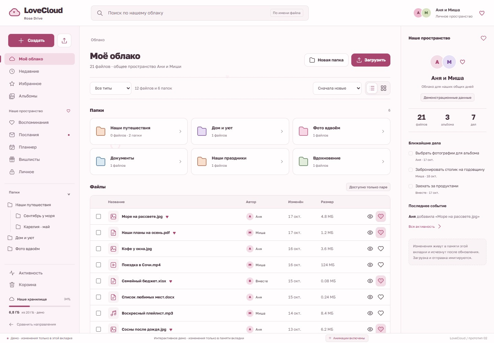
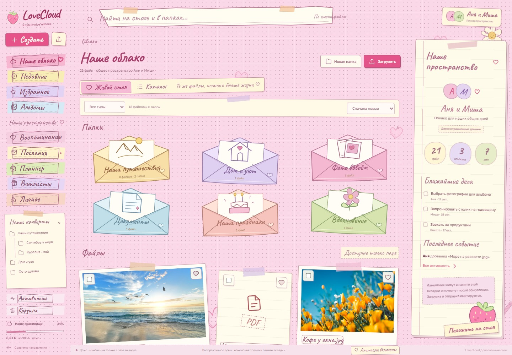
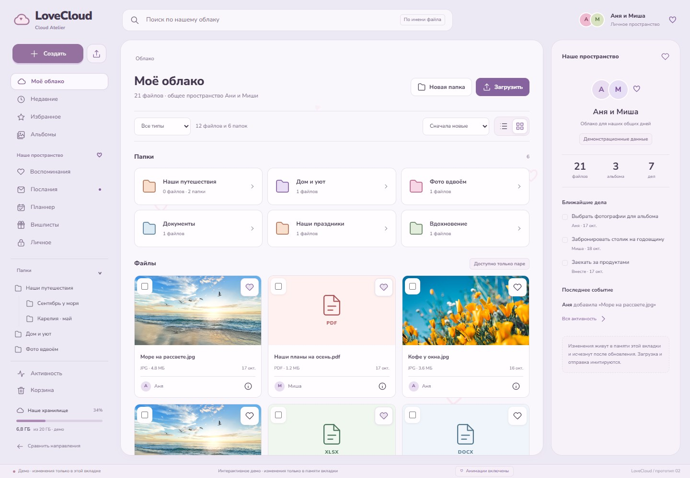

Rose Drive
Плотная таблица, устойчивое дерево папок и спокойная розовая палитра. Всё перед глазами.
Открыть Rose DriveПолноценный файловый менеджер, общий планнер и вишлисты — в одном месте.

Рисованный стол для наших файлов, записок и планов. Конверты, фотографии на скотче, бумажные кармашки и живые сердечки.

Плотная таблица, устойчивое дерево папок и спокойная розовая палитра. Всё перед глазами.
Открыть Rose Drive
Больше пространства фотографиям. Мягкие поверхности, альбомы и визуальная сетка материалов.
Открыть Cloud Atelier